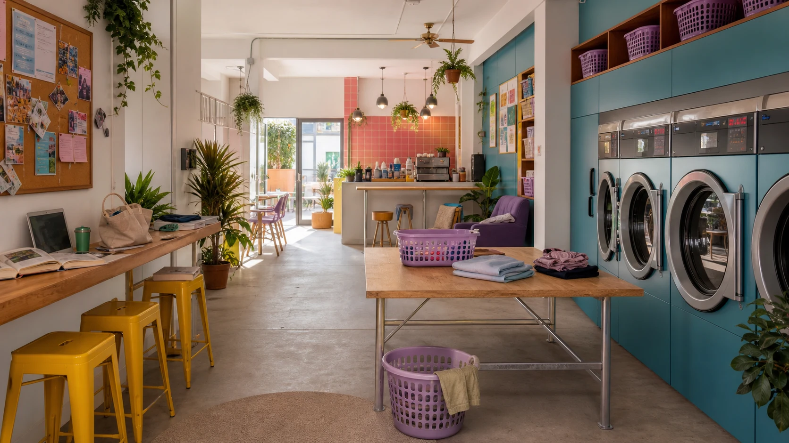
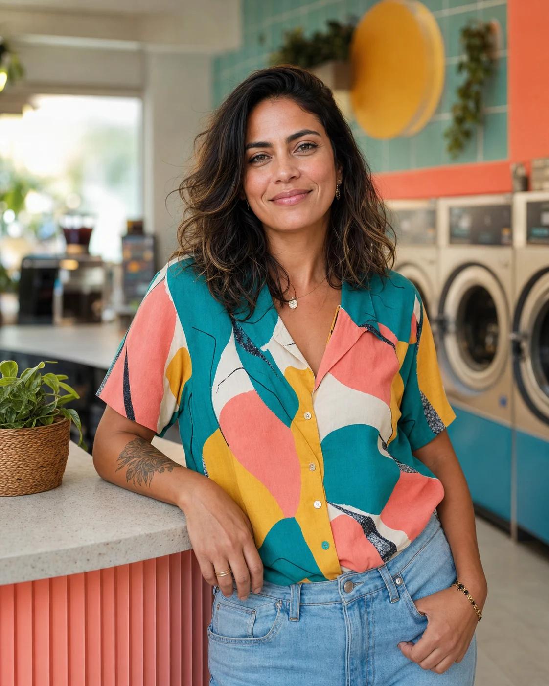
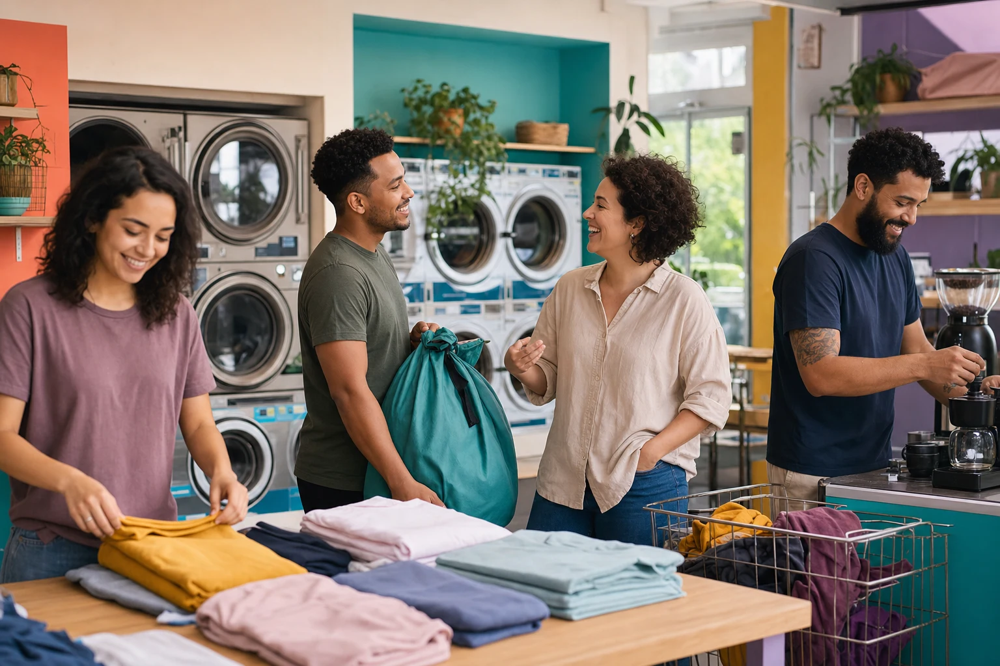

Bia Rocha
Começou como cliente no self-service e virou a guardiã da dobra. Ela reconhece camiseta de banda, uniforme de trabalho e peça que precisa respirar no cabide.
Sobre a Lavou
A Lavou nasceu para provar que tarefa doméstica não precisa ter cara de castigo. Aqui, lavar roupa divide espaço com pausa, vizinhança e uma playlist que muda com o clima da rua.

A história
Nina Azevedo encontrou o imóvel numa tarde de chuva, quando procurava um lugar pequeno para testar uma lavanderia menos fria. O bairro já tinha café bom, feira, ateliê e bar de esquina; faltava um lugar onde a roupa pudesse girar enquanto a vida continuava.
A reforma manteve o piso antigo, ganhou parede lavanda, máquinas industriais e uma bancada comprida para quem chega com notebook, livro ou só vontade de ficar uns minutos sem pressa. No primeiro mês, Nina anotou o nome de cada cliente num caderno amarelo; hoje a equipe ainda usa esse costume para lembrar preferências, restrições e histórias.

Fundadora
Filha de uma costureira do Bixiga, Nina cresceu entre retalho, barra de calça e conversa de cliente. Depois de anos produzindo shows, percebeu que sabia organizar fluxo, acolher gente e resolver imprevisto como ninguém. A Lavou virou a mistura dessas habilidades: operação afiada com clima de casa aberta.
Equipe
Nina é a fundadora, mas a rotina tem assinatura coletiva: cada pessoa segura uma parte da operação e uma parte da conversa.
Começou como cliente no self-service e virou a guardiã da dobra. Ela reconhece camiseta de banda, uniforme de trabalho e peça que precisa respirar no cabide.
Faz a ponte entre a loja e a rua. Quando o delivery atrasa por chuva, é Leo quem liga, remarca e encontra um jeito honesto de resolver.
Aprendeu cuidado têxtil ajudando a avó em um ateliê. Na Lavou, olha etiqueta, tecido e mancha antes de prometer milagre.

Preço claro, prazo combinado e mensagem quando a roupa estiver pronta.
Produto bom, perfume controlado e opção hipoalergênica para peças sensíveis.
Mural aberto, parceiros locais e uma mesa que sempre tem espaço para mais uma pessoa.